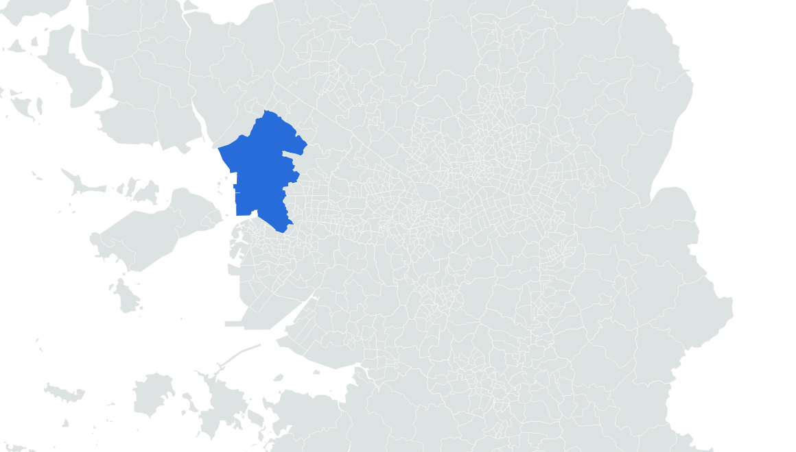

<template><style>#analysis-S01{position:absolute;inset:0;width:100%;height:100%}</style><div id="analysis-S01" data-composition-id="analysis-S01" data-width="1080" data-height="1920" data-duration="4.733084"><div  class="t" style="left:140px;top:275px;width:700px;font-size:58px;color:#173348;font-weight:700">많이 사는 곳, 늘어난 곳</div><div  class="r" style="left:125px;top:820px;width:730px;height:245px;background:#fffef9;border-radius:12px"></div><div  class="t" style="left:145px;top:842px;width:680px;font-size:40px;color:#173348;font-weight:700">2024 옛 인천 서구</div><div  class="t" style="left:145px;top:902px;width:680px;font-size:87px;color:#286cda;font-weight:700">15,737쌍</div><div  class="t" style="left:145px;top:1017px;width:680px;font-size:29px;color:#173348;font-weight:400">현재 서해구+검단구 범위</div><div  class="t" style="left:140px;top:1260px;width:700px;font-size:26px;color:#173348;font-weight:400">통계청 2023·2024 신혼부부통계</div><div  class="t" style="left:140px;top:1292px;width:700px;font-size:26px;color:#173348;font-weight:400">수도권 53개 구 · 전체 · 단위: 쌍</div><div  class="t" style="left:140px;top:1325px;width:700px;font-size:26px;color:#536873;font-weight:400">지도: SGIS · vuski/admdongkor · CC BY4.0</div></div><script>window.__timelines["analysis-S01"]=gsap.timeline({paused:true});</script></template>